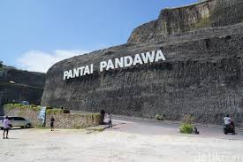

BEST DESTINATION
Bali atau biasa kita kenal dengan pulau Dewata. Bali sebelumnya merupakan bagian dari Provinsi Sunda Kecil bersama dengan Lombok, Sumbawa, Sumba, Flores, dan Timor. Pada tahun 1958 Bali resmi menjadi provinsi sendiri dengan ibukota Singaraja. Kemudian pada tahun 1960 berpindah ke Denpasar. Provinsi Bali terdiri dari Pulau Bali dan pulau-pulau kecil di sekitarnya antara lain Nusa Penida, Nusa Lembongan, Nusa Ceningan, dan Pulau Serangan. Secara keseluruhan Bali memiliki sekitar 85 pulau, termasuk yang tidak berpenghuni.Bali adalah pulau yang sangat indah dengan panjang garis pantai sekitar 633,35 km. Di Pulau Bali terdapat gunung berapi, sungai-sungai, dan danau. Keberadaan gunung berapi memberikan kesuburan tanah untuk usaha pertanian. Gunung berapi di Pulau Bali adalah Gunung Batur dan Gunung Agung. Titik tertinggi di Bali adalah Gunung Agung setinggi 3.148 m dan terakhir meletus pada tahun 1963. Sedangkan Gunung Batur letusannya pernah menghasilkan bencana besar di bumi sekitar 30.000 tahun yang lalu.Sebagian besar penduduk Bali beragama Hindu. Di hampir setiap sudut wilayah terdapat pura peribadatan, baik pura besar yang dipakai sebagai tempat upacara bersama maupun pura kecil di setiap rumah. Oleh karena itu, selain dikenal sebagai Pulau Dewata, Bali juga disebut dengan Pulau Seribu Pura. Ritual keagamaan yang kental memengaruhi hampir setiap unsur dan gerak kehidupan masyarakat Bali. Hal ini menjadikan Bali tidak hanya memiliki pemandangan yang indah tetapi juga kebudayaan yang unik, eksotis, dan terjaga. Bali adalah tujuan wisata internasional yang seringkali lebih dikenal daripada Indonesia.Masyarakat Bali menganut falsafah hidup Tri Hita Karana yang memuat tiga unsur pembangun keseimbangan dan keharmonisan hubungan antara manusia dengan Tuhan, manusia dengan manusia, dan manusia dengan lingkungannya. Tri Hita Karana menjadi sumber kesejahteraan, kedamaian, dan kebahagiaan bagi kehidupan manusia.Perekonomian Bali sebagian besar ditopang oleh sektor pariwisata. Denpasar merupakan pusat pemerintahan dan perekonomian hingga saat ini. Beberapa kegiatan ekonomi dan kawasan baru telah dan sedang dikembangkan untuk mendukung sektor pariwisata, seperti ekonomi kreatif, pariwisata maritim, dan ekowisata di Ubud, Nusa Dua, Seminyak, Jimbaran, dan beberapa tempat lainnya.Klik disini
REKOMENDASI WISATA TERBAIK DI BALI



Author: Silvia M (12180243), Josellyn (12180248), Putri N (12180252)
Josellynkusuma@gmail.com